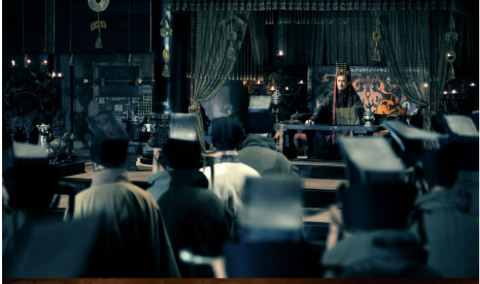
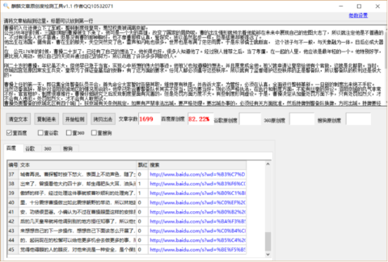

《三国演义》曹操初入仕途便立下了军威，整顿制度惊皇帝，惹怒权贵被调离京都
公元155年的时候，三国时期的曹操被生下来了，他可是一个大的英雄，改变了国家的局势，曹的出生情形就预示着他能够在未来中展现自己的宏图大志了，所以就注定他是不普通的，不过有很多人也不普通，但是没有曹的那种胸怀，也不像曹那样认真，爱探究，所以虽然起步一样，但是结果却差得远。
他出生在沛国。据传言，曹在生的那天，天空突然变了色，雷声和闪电也很多，世界也是布满了茫茫雨雾，于是东邻儒士就断言， 这个孩子与不一般，与天象融为一体，日后必成大器。
在 公元174年的时候，曹操二十岁了，已经有了自己的想法了，他长得也好，很多人知道他了。经过别人推荐之后，当了孝廉，在一起的人里，他应该是最年轻的一个。他特别好学，更比别人用劲，他以自己的天资并通过自己的努力，所以战胜了许许多多同龄的人。
刚二十岁的曹操，年纪虽不大，但他早已急于当官，实现心中所想的伟大的事迹。他祖父也知道操的想法，并且愿意成全他。祖父就申请让皇帝给他有个官做，这就是北都尉。当时，京城因宫廷原因常发生兵变，皇帝为了保证登基后的安静，有了这方面的要求。任何人都必须遵守这些秩序，所以就有了监督维护这些秩序的正是警备队，所以警备队的权利还是很大的。
曹操上任的第一天，即召集全体警备队员开会，首先命令大家暂时各施其职，维持原有秩序，并告诉大家，为管好，必须在认真，全面进行整顿革新。一旦新的制度出来绝不手软。 当然这番言辞，是针对洛阳京城地区的情况而说的。他早已听说曹警备队长其实不好当，因为要当好，则必须严格执法，在执行和制度方面，不能有丝毫的异议。洛阳京城的风气非常不好，官官相护、制度很难推行。曹操仔细研究之后发现制度里面有完善的，但是处罚方面力度不大。有些制度形同虚设。于是，曹操决定从加重处罚方面下手，只有处罚如烈火，才不会有人违犯。处罚如烈火，才不会有人敢尝试。
曹操负责警备的京城北区有四个城门，按京城有关条例规定，如果有严禁非法出城，要严格处理。要出城办事的，必须经有关方面批准，然后持牌到警备队换牌，方可出城。持牌要经过审查，换牌也要经过审查，任何一一道审查不合格，都不准出城。即使合格，若警备队认为情况非常，也暂时不许出城。曹操再次明令重中这一制度，并大大加重了违规处罚。他在每个城门悬挂特制的五色木棒数10根，凡非法出城者，不论皇亲国威，一律用五色木棒活活打死。
处罚条例公布， 果然引起很大议论，人们感到既惊叹又害怕。曹操不管这些，他想只有认真执行之后，才会归于一致。他告诫士兵，严守岗位，任何人不得擅离职守。凡有违犯者，即行拿下，当众处死。起初，并没有人来违反，因为对于这个新来的警备队长，尚摸不清性格脾气，谁也不愿意冒险试探。况且，不少人也打听到，新任警备队长是曹腾的孙子。
但是，几个月后，有一个人于深夜时分，偷偷摸摸出城。很快被值班士兵发现，立即将其捉拿，按处罚规定，士兵可以当场处死他。但是这人声称他是大官官蹇硕的叔父。士兵当然就不敢轻举妄动了，因为在曹队长之前，凡是有特殊关系的人，即使触犯条例，都律从轻发落，虽在表面上进行责罚，而实际上并没有处罚。而这次，非一般责罚， 而是没命了。
士兵们只将那人关起来，便向曹操禀报。曹操听非常气愤， 本想首先责罚这两个士兵的，想想这样效果不好，不如先惩处了违法出城者再说。曹探暂时按下怒火，表面上不动声色，随了士民去到城门营房。违禁者被押出来了，曾操看他大约四十岁，却生得肥头大耳，油头滑面，见了曹操并不下跪，一副傲娇的样子，经过处理这件事就被曹吵顺利的处理完了，他的这番举动也贝林地看在眼里，十分震惊曹操做出如此震惊朝野的举动，所以林地家长了曹操，说他的整治社会治安，功绩很显著。
小编认为不过在曹操眼里这样的安排是对他的处境比较好的，之后的几天皇帝就将他调到别的地方担任知事了，所以他也是比较满意的，他可以静下心来想想自己的下一步操作，想想自己下面该怎么开展了，给了他是时间。对他也是好处的，起码现在的松懈可以给他更多机会去做更多的事，而且现在的安排能够让自己远离觉得他碍眼的人的眼皮，对他来说是一种安全，是个保护吧。
